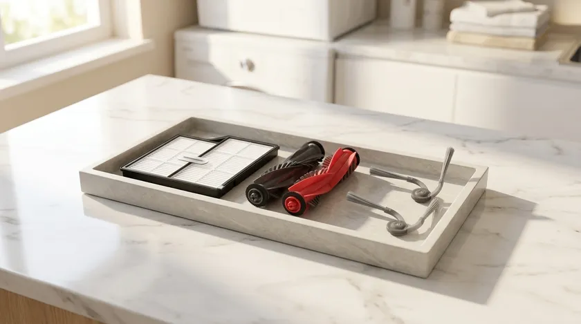
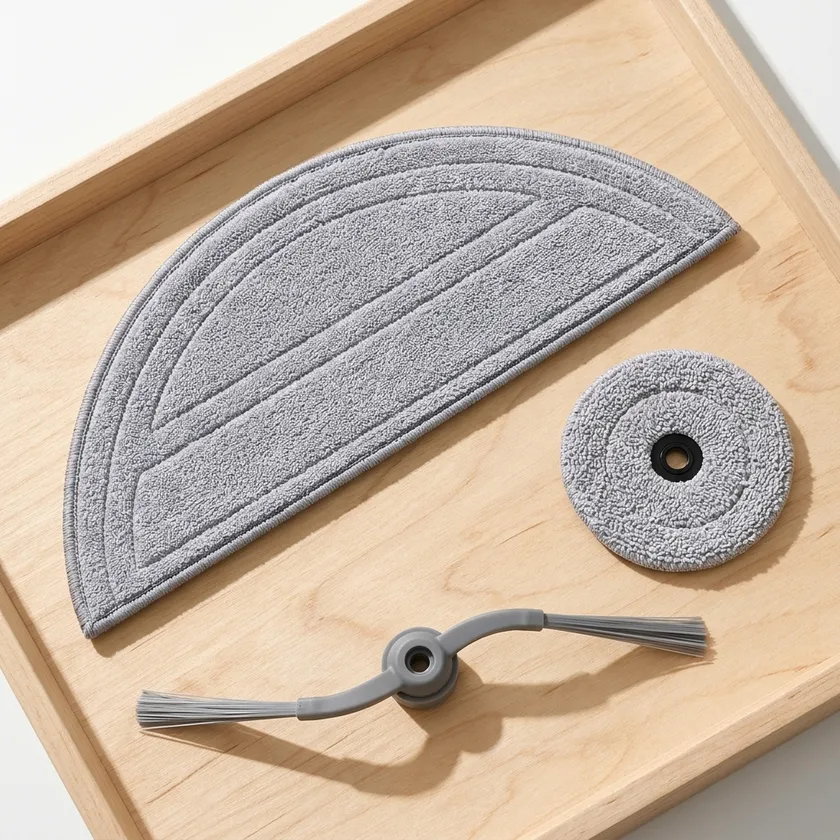

로보락 (Roborock)
로보락 S9 MaxV Ultra 세제 미포함 1년 세트 구성과 단차형 필터·걸레 관리법
글·구성: 제이상점 · 기종별 1:1 호환 실물 점검 · 교체 주기 비교표 · 스마트스토어 패키지 안내

핵심 관리 · 선택 체크포인트
- 전용 세정제는 따로 구비해 두었고 브러시·단차형 필터·메인/미니 물걸레·더스트백만 한 번에 보충하고 싶을 때 세제 미포함 세트가 유용합니다.
- 비대칭 단차형 필터와 황토색 카드 더스트백 규격 한눈에 대조하기: S9 MaxV Ultra는 한쪽 테두리가 계단 모양으로 꺾인 비대칭 단차형 필터와 황토색(베이지) 카드 칼라 더스트백을 사용합니다.
- 1년 패키지 구성품과 기종별 옵션 확인표: 세제 미포함 구성이라 보관 부피가 작고 자주 교체하는 핵심 부품 위주로 알뜰하게 관리할 수 있습니다.
- 리넨 수납 박스 정리와 세탁실 통풍 매트 건조 루틴: 황토색 칼라 더스트백과 새 물걸레 패드는 리넨 수납 박스에 깔끔하게 모아 두고, 세척한 단차형 필터는 세탁실 통풍 매트 위에서 바짝 말려 재장착하면 냄새 걱정을 줄일 수 있습니다.
- 메인·미니 걸레 수량 확인법과 기간별 세트 선택 기준을 살펴보세요: 두 가지 물걸레 패드의 수량 균형을 맞추는 팁은 S9 MaxV Ultra 물걸레 세트 메인·미니 수량 확인법에서, 남은 부품 수에 따라 3개월·6개월·1년 구성을 고르는 요령은 S9 MaxV Ultra 기간별 세트 고르는 법에서 확인해 보세요.
실물 부품 디테일 · 관리 구성 이미지




부품 규격 · 점검 기준표
| 확인 항목 | 부품·옵션 특징 | 점검·선택 포인트 |
|---|---|---|
| 듀오디바이드·2발 사이드브러시 | 적·흑 원추형 브러시 1쌍 + 2발 곡선형 사이드브러시 | 양끝 회전축 먼지 제거 및 브러시 탄성 점검 |
| 비대칭 단차형 필터 | 계단식 꺾임 프레임의 2분할 주름 필터 | 물세척 후 통풍 매트에서 그늘 건조해 1:1 교대 장착 |
| 메인·미니 걸레 및 더스트백 | 반원형 메인 걸레 + 원형 미니 패드 + 황토색 칼라 봉투 | 걸레 2종 동시 교체 및 도크 슬롯 밀착 장착 |
💡 교체 주기가 겹치는 필터·브러시·물걸레·더스트백은 단품 배송비를 여러 번 내기보다 로보락 S9 MaxV Ultra 기간별 세트(3개월·6개월·1년)로 미리 구비해 두면 물세척 후 24시간 교대 건조까지 끊김 없이 관리할 수 있습니다.
자주 묻는 질문 (FAQ)
Q. 로보락S9MaxVUltra의 듀오디바이드·2발 사이드브러시 규격과 관리 기준은 무엇인가요?
A. 적·흑 원추형 브러시 1쌍 + 2발 곡선형 사이드브러시 규격을 사용하며, 양끝 회전축 먼지 제거 및 브러시 탄성 점검 기준으로 점검·교체하면 청소 효율을 안정적으로 유지할 수 있습니다.
Q. 로보락S9MaxVUltra의 비대칭 단차형 필터 규격과 관리 기준은 무엇인가요?
A. 계단식 꺾임 프레임의 2분할 주름 필터 규격을 사용하며, 물세척 후 통풍 매트에서 그늘 건조해 1:1 교대 장착 기준으로 점검·교체하면 청소 효율을 안정적으로 유지할 수 있습니다.
Q. 로보락S9MaxVUltra의 메인·미니 걸레 및 더스트백 규격과 관리 기준은 무엇인가요?
A. 반원형 메인 걸레 + 원형 미니 패드 + 황토색 칼라 봉투 규격을 사용하며, 걸레 2종 동시 교체 및 도크 슬롯 밀착 장착 기준으로 점검·교체하면 청소 효율을 안정적으로 유지할 수 있습니다.
제이상점 1:1 검수 추천 패키지 · 구매 안내
메인 추천 구성
대표 구성 참고가 58,700원대 (옵션·쿠폰별 스마트스토어 결제 화면 기준)
1년 세트 (세제 미포함)6개월 세트 (세제 미포함)3개월 세트 (세제 미포함)
☑️ 주문 전 확인해 두면 좋은 제이상점 안심 포인트
· 기종별 1:1 전용 규격 검수: 모델명·연식에 맞는 호환·정품 구성을 검수해 오주문 불안을 줄였습니다.
· 해외직배송 미리 주문 팁: 중국 구매대행·해외직배송 상품이므로 마지막 여분 1개를 꺼내 쓰는 시점에 개인통관고유부호와 함께 여유 있게 주문해 두시면 훨씬 경제적인 비용으로 끊김 없이 교체하실 수 있습니다.
· 기종별 1:1 전용 규격 검수: 모델명·연식에 맞는 호환·정품 구성을 검수해 오주문 불안을 줄였습니다.
· 해외직배송 미리 주문 팁: 중국 구매대행·해외직배송 상품이므로 마지막 여분 1개를 꺼내 쓰는 시점에 개인통관고유부호와 함께 여유 있게 주문해 두시면 훨씬 경제적인 비용으로 끊김 없이 교체하실 수 있습니다.
📖 더 많은 가정 내 사용 스토리와 상세 후기가 궁금하시다면
📱 네이버 블로그 모바일 원문 보기 ↗